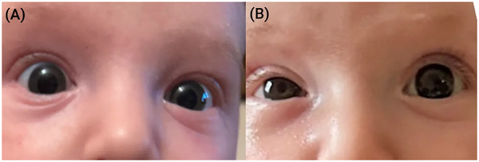
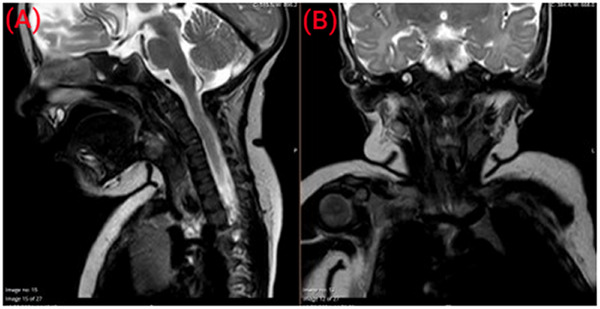
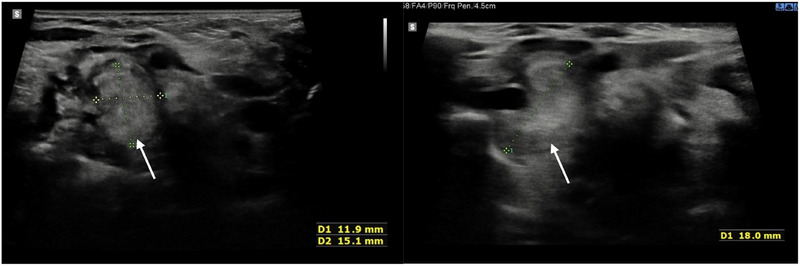

3131 — Hội chứng Horner ở trẻ: đồng tử nhỏ + sụp mi là chỉ định chụp MRI cổ–trung thất, không phải "lệch đồng tử lành tính"
Tags: pattern:horner pattern:dong-tu-khong-deu pattern:khoi-trung-that-tren pattern:mot-ben vung:co vung:trung-that protocol:MRI-co-nguc incidentaloma:khong score:INRG
Mức chắc chắn (certainty): tổng hợp y văn (literature synthesis) — ghép ca nguyên văn 18 tuần tuổi phát hiện u nguyên bào thần kinh cổ–trung thất (Pediatric Investigation 2025, PMCID PMC12175629, CC BY-NC-ND 4.0), ca Horner do đặt catheter tĩnh mạch cảnh trong ở nhũ nhi (Int J Surg Case Rep 2026, PMCID PMC13652411, CC BY-SA 4.0) và bài tổng quan phân tầng nguy cơ u nguyên bào thần kinh (J Clin Med 2026, PMCID PMC12898582, CC BY 4.0).
Câu chốt: trẻ sụp mi + đồng tử nhỏ cùng bên, lệch đồng tử rõ hơn trong tối, không đỏ mắt, không đau = Horner, và ở trẻ em đó là chỉ định chụp toàn bộ đường giao cảm: MRI sọ–cổ–trung thất tới T4 (không phải "MRI sọ" đơn thuần), kèm catecholamine nước tiểu. Ba con số định khung: 10% Horner mắc phải ở trẻ do khối ác tính, thường là u nguyên bào thần kinh trung thất (PMC12175629); Horner thể không điển hình (chỉ một dấu, từng lúc) chiếm tới 40% và làm nguy cơ u tăng gấp 4 lần (PMC12175629); u nguyên bào thần kinh chiếm ~15% tử vong do ung thư ở trẻ và sống 5 năm < 50% ở nhóm nguy cơ cao (PMC12898582). Bỏ sót = chậm chẩn đoán ung thư, không phải "lệch đồng tử vô hại".
1. Tổng quan bệnh học – cơ chế hình ảnh (TẠI SAO)
1.1. Ba neuron — ba vùng cần chụp, và vì sao không được rút gọn
- Neuron 1 (trung ương): từ vùng dưới đồi sau bên → bó giao cảm xuống tủy cổ → trung tâm Budge C8–T2. Tổn thương: thân não, tủy cổ, rỗng tủy (syringomyelia), nhồi máu/máu tụ.
- Neuron 2 (tiền hạch): thoát T1 → chuỗi giao cảm cổ → hạch cổ trên (C3–C4). Đây là đoạn hay bị u nguyên bào thần kinh chèn ép nhất, vì u xuất phát từ chính mầm giao cảm cạnh sống/trung thất trên.
- Neuron 3 (hậu hạch): hạch cổ trên → đám rối quanh động mạch cảnh trong → xoang hang → ổ mắt, chi phối cơ giãn đồng tử và cơ Müller (nâng mi).
- TẠI SAO hình ảnh phải phủ cả 3 tầng: một khối 18 × 11 × 13 mm ở ngang T1/T2, cạnh khí quản (ca PMC12175629) chỉ lộ ra khi trường chụp xuống tới trung thất trên; MRI sọ đơn thuần sẽ âm tính giả và trẻ bị trả về với nhãn "lệch đồng tử lành tính".
1.2. TẠI SAO lệch đồng tử rõ hơn trong tối — vật lý của đồng tử
- Đồng tử bình thường giãn trong tối nhờ cơ giãn đồng tử (giao cảm); đồng tử Horner không giãn được → hiệu số anisocoria tăng khi tắt đèn. Đây là nghiệm pháp tại giường rẻ nhất và là lý do ảnh chụp trong phòng tối (ánh sáng mờ) thể hiện rõ hơn ảnh chụp ngoài trời.
- Sụp mi do liệt cơ Müller (chỉ 1–2 mm), không phải liệt cơ nâng mi chính → sụp mi nhẹ; kèm giả lồi mắt (apparent enophthalmos) vì khe mi hẹp. Chính tổ hợp này bị đọc nhầm thành phù quanh ổ mắt / viêm mô tế bào trước vách — đúng như ca PMC12175629 (trẻ 18 tuần vào viện vì "phù quanh ổ mắt phải", CRP bình thường, điều trị ceftriaxone không cải thiện).
- Dị sắc tố mống mắt (iris heterochromia) chỉ có ở Horner bẩm sinh/khi còn nhỏ (mống mắt chưa đủ sắc tố) — dấu hiệu định khu thời gian, không phải định khu giải phẫu.
- TẠI SAO khối u gây Horner lại thường canxi hóa: u nguyên bào thần kinh có hoại tử + canxi hóa; trên siêu âm ca này là cấu trúc không đồng nhất, có ổ tăng âm nhỏ nghi canxi hóa và tưới máu không đều.
1.3. Ngưỡng định lượng nằm lòng
| Đại lượng | Số liệu | Nguồn |
|---|---|---|
| Horner ở trẻ < 19 tuổi | 1,42–2,54/100.000 | PMC12175629 |
| Nguyên nhân mắc phải do khối ác tính | 10%, thường u nguyên bào thần kinh trung thất (chèn neuron 2) | PMC12175629 |
| Horner không điển hình (một dấu, từng lúc) | tới 40% ca nhi; nguy cơ u × 4 | PMC12175629 |
| Kích thước khối trong ca | 18 × 11 × 13 mm, ngang T1/T2, cạnh khí quản | PMC12175629 |
| VMA + HVA nước tiểu | độ nhạy 84%; 29% ca âm tính đã ở giai đoạn 4 | PMC12175629 |
| Panel 8 catecholamine nước tiểu | độ nhạy 95%; u không bắt MIBG: 33% → 89% | PMC12175629 |
| Apraclonidine 0,5% | độ nhạy 93% (cocaine 40%); tránh ở trẻ < 1 tuổi (ngưng thở, nhịp chậm, tụt huyết áp) | PMC12175629 |
| U nguyên bào thần kinh | 7–10% ung thư trẻ; tuổi trung vị 17 tháng; ~15% tử vong ung thư trẻ | PMC12898582 |
| Sống 5 năm | nguy cơ thấp/trung bình ~95%; nguy cơ cao < 50% | PMC12898582 |
| Theo dõi u nhỏ, nguy cơ thấp | chụp lại 6–12 tuần; u < 5 cm ở trẻ nhỏ có thể theo dõi không sinh thiết | PMC12175629 |
| Horner sau can thiệp tĩnh mạch cảnh trong | xuất hiện < 24 giờ, tự hết ~7 ngày (ca 38 ngày tuổi, 2,7 kg) | PMC13652411 |
- Chưa rõ — cần tra: không có ngưỡng mm lệch đồng tử được thẩm định riêng cho trẻ; thực hành dùng so sánh ảnh cũ + nghiệm pháp ánh sáng tối, không dựa vào một con số.
2. Mẫu hình + chẩn đoán phân biệt theo vị trí (Gamut)
- Neuron 2 — cổ/trung thất trên (hay gặp nhất ở trẻ): u nguyên bào thần kinh (cervicothoracic, thường canxi hóa, bắt MIBG), hạch thần kinh (ganglioneuroma) lành tính, u Pancoast/đỉnh phổi (bài 1652), chấn thương đám rối cánh tay/sinh ngạt, can thiệp tĩnh mạch cảnh trong – catheter trung tâm (bài 3044, ca PMC13652411), phẫu thuật tuyến giáp/cổ.
- Neuron 3 — động mạch cảnh trong/xoang hang: bóc tách động mạch cảnh (bài 1773, 3046) — thể đau cổ + Horner, phải CTA; phình/xơ xoang hang, viêm quanh ổ mắt.
- Neuron 1 — thân não/tủy cổ: nhồi máu hành não bên, rỗng tủy, chấn thương tủy cổ, u thân não — thường kèm dấu thần kinh khác (nhìn đôi, mất cảm giác đối bên).
- Bẩm sinh: chấn thương sinh (forceps/khó sinh) — Horner không tiến triển, có dị sắc tố mống mắt, không khối; vẫn cần MRI để loại u trước khi kết luận.
- Không phải Horner: lệch đồng tử sinh lý (nhỏ < 1 mm, phản xạ đều, không sụp mi), dùng thuốc nhỏ mắt, viêm mống mắt dị sắc (Fuchs), sụp mi do bệnh cơ (không miosis).
- Gợi nhớ HORNER: Hạch cổ trên/u trung thất, Ocular (miosis + ptosis), Rễ T1, Neuroblastoma, Enophthalmos giả, Rà soát ảnh cũ.
3. Bảng so sánh phân biệt (ma trận đối chiếu)
| Thực thể (entity) | Hình ảnh điển hình | Chốt vào (rule-in) | Chốt loại (rule-out) | Gợi ý xác nhận |
|---|---|---|---|---|
| U nguyên bào thần kinh cổ–trung thất | Khối cạnh khí quản, ngang T1–T2, T2 không đồng nhất, canxi hóa (US: ổ tăng âm nhỏ), tưới máu không đều | Khối dọc chuỗi giao cảm + Horner mới xuất hiện + catecholamine nước tiểu | Khối ngoài trục giao cảm (tuyến giáp, nang giáp lưỡi) không gây Horner | MRI cổ–ngực + panel 8 catecholamine + MIBG |
| Ganglioneuroma (lành) | Khối dài, bờ nhẵn, T2 sáng, ngấm thuốc chậm, không canxi hóa thô | Horner mạn, không tiến triển, khối bờ đẹp | Xâm lấn mạch/khí quản, phát triển nhanh → nghĩ ác | Mô bệnh/Sinh thiết khi mổ |
| Bóc tách động mạch cảnh trong | Hẹp teo dài (string sign), giả lòng, huyết khối trong thành T1 fat-sat, nhồi máu trên DWI | Đau cổ/mặt cùng bên + Horner + CTA bất thường | CTA bình thường + không đau → ít nghĩ bóc tách | CTA cổ; MRI T1 fat-sat; DWI |
| Horner sau catheter TM cảnh trong | Không khối, không máu tụ trên siêu âm tại giường; Horner trong 24 giờ sau thủ thuật | Thời gian chặt với thủ thuật + hồi phục trong ~7 ngày | Khối/thâm nhiễm quanh cảnh → phải MRI | Siêu âm tại giường + theo dõi thần kinh–mắt |
| Horner bẩm sinh (sinh khó) | Không khối; dị sắc tố mống mắt cùng bên | Horner từ lúc sinh, mống mắt nhạt màu, không tiến triển | MRI âm tính vẫn chưa loại u — phải làm catecholamine | MRI + catecholamine nước tiểu |
| U Pancoast/đỉnh phổi | Khối đỉnh phổi xâm lấn hạch giao cảm, hủy xương sườn 1–2 | Đau vai–cánh tay + Horner + khối đỉnh phổi | Khối trung thất trên đơn thuần → không phải Pancoast | MRI ngực + CT xương |
4. Protocol chụp + hệ phân độ
4.1. Quy trình hình ảnh (không rút gọn)
- Bước 1 — xác nhận Horner tại giường: so ảnh cũ, đo khe mi, xem lệch đồng tử trong tối vs sáng. Apraclonidine 0,5% chỉ dùng ≥ 1 tuổi; < 1 tuổi dùng cocaine 4–10% nếu có, hoặc đi thẳng vào hình ảnh khi nghi ngờ cao.
- Bước 2 — MRI sọ–cổ–ngực (1,5 T trở lên): T1W, T2W, STIR/T2 fat-sat (khối, phù), DWI (nhồi máu), T1 fat-sat sau tiêm (hoại tử, xâm lấn); trường chụp từ nền sọ tới T4 — đủ để phủ neuron 2.
- Bước 3 — siêu âm cổ tại giường: khối nông, đo 3 chiều, tìm canxi hóa và tưới máu; siêu âm không thay MRI vì không thấy phần trung thất sau khí quản.
- Bước 4 — CTA cổ khi Horner + đau cổ/hàm, chấn thương, hoặc MRI có bất thường quanh động mạch cảnh (bóc tách, giả phình).
- Bước 5 — xét nghiệm: panel 8 catecholamine nước tiểu (VMA, HVA, 3-methoxytyramine, dopamine, epinephrine, metanephrine, norepinephrine, normetanephrine) — nhạy 95%, tốt hơn VMA/HVA đơn thuần 84%; MIBG để tìm ổ di căn.
4.2. Phân tầng u nguyên bào thần kinh theo hình ảnh (INRG, 2009)
- INRGSS dựa trên hình ảnh TRƯỚC mổ, không dựa kết quả phẫu thuật: L1 = khu trú 1 khoang, không IDRF; L2 = khu trú nhưng có ≥ 1 IDRF (bọc mạch lớn, xâm lấn cơ quan sống); M = di căn xa; MS = < 18 tháng, di căn da/gan/tủy xương < 10% tế bào non.
- Ngưỡng xử trí: ≥ 2 IDRF → cân nhắc hóa trị trước mổ; u < 5 cm, nguy cơ thấp, trẻ nhỏ → có thể theo dõi không sinh thiết (COG NCT02176867), chụp lại 6–12 tuần.
flowchart TD
A[Trẻ sụp mi + đồng tử nhỏ một bên] --> B{So ảnh cũ + nghiệm pháp tối}
B -->|Lệch đồng tử rõ hơn trong tối| C[Horner]
B -->|Lệch cố định, không sụp mi| Z[Lệch sinh lý / thuốc]
C --> D{MRI sọ–cổ–ngực tới T4}
D -->|Khối cạnh khí quản T1–T2| E[U nguyên bào thần kinh: catecholamine + MIBG]
D -->|Hẹp teo cảnh trong + huyết khối thành| F[Bóc tách cảnh: CTA + kháng đông]
D -->|Không khối| G{Có Horner bẩm sinh + dị sắc tố?}
G -->|Có| H[Theo dõi, catecholamine nước tiểu]
G -->|Không| I[Tìm neuron 1: MRI thân não–tủy cổ, DWI]
E --> J{≥ 2 IDRF?}
J -->|Có| K[Hóa trị trước mổ]
J -->|Không, u < 5 cm| L[Theo dõi 6–12 tuần]
5. Biến thể bình thường và cạm bẫy
- "Lệch đồng tử" sinh lý: lệch < 1 mm, hai bên giãn đều trong tối, không sụp mi, không giả lồi mắt — không chụp. Cạm bẫy ngược lại: Horner thật bị bỏ qua vì phòng khám sáng, đồng tử hai bên gần bằng nhau.
- Sụp mi nhẹ + giả lồi mắt bị đọc thành "phù quanh ổ mắt": ca PMC12175629 vào viện vì phù quanh ổ mắt, CRP bình thường, kháng sinh không đỡ. Quy tắc: phù quanh ổ mắt không đỏ, không đau, CRP bình thường → soi đồng tử.
- MRI sọ đơn thuần = âm tính giả: khối nằm ở T1/T2, ngoài trường chụp sọ thường quy. Luôn ghi chỉ định "MRI sọ–cổ–ngực, tới T4".
- Horner "từng lúc" (intermittent): tới 40% ca nhi; đừng vì "hôm nay cân" mà kết luận bình thường — nguy cơ u × 4.
- Catecholamine âm không loại u: VMA/HVA âm ở 29% ca đã giai đoạn 4 → dùng panel 8 chất; MIBG âm cũng gặp ở u không bắt MIBG.
- Sau can thiệp cổ: Horner trong 24 giờ sau đặt catheter TM cảnh trong/bướu giáp là biến chứng đã biết, thường tự hết ~7 ngày; siêu âm tại giường loại máu tụ (ca PMC13652411). Không được biến nó thành "không cần chụp gì" khi có khối/thâm nhiễm.
- Bẫy thỏa mãn tìm kiếm (satisfaction of search): thấy u trung thất rồi dừng, bỏ qua hạch giao cảm hai bên, di căn xương, và bóc tách cảnh đồng thời.
6. Tự lượng giá — Blind Quiz
Ca 1 — Nhũ nhi 18 tuần, "phù quanh ổ mắt phải" 4 ngày, không sốt, CRP bình thường. Nhìn ảnh, mô tả trước.

- Gợi ý lâm sàng: trẻ khỏe, không chấn thương, không sinh khó; mắt không đỏ, không chảy mủ.
- Câu hỏi: dấu hiệu ở mắt phải? Vì sao "phù quanh ổ mắt" lại là ảo giác? Cần chụp gì và tới đâu?
Bấm để hiện đáp án (findings + chẩn đoán)
- Dấu hiệu: sụp mi phải nhẹ + đồng tử phải nhỏ hơn, khe mi hẹp làm mắt như "lõm vào" (giả lồi mắt) — không có phù/mi đỏ thật.
- Chẩn đoán: Horner phải mới xuất hiện — phải chụp MRI sọ–cổ–ngực tới T4, không phải MRI sọ.
- Nguồn ảnh: Pediatric Investigation 2025 (PMC12175629), CC BY-NC-ND 4.0, nguyên bản không chỉnh sửa.

- Câu hỏi tiếp: khối nằm ở đâu, tín hiệu gì, chẩn đoán nào đứng đầu?
Bấm để hiện đáp án
- Dấu hiệu: khối mô mềm trước thân đốt T1/T2, cạnh khí quản, trong trung thất trên, T2 rất thấp bên trong với viền tín hiệu trung gian; đẩy thực quản, lan ra sau nguyên ủy động mạch dưới đòn phải và động mạch cảnh chung.
- Chẩn đoán: u nguyên bào thần kinh cổ–trung thất (chèn neuron 2) — xác nhận bằng catecholamine nước tiểu + MIBG, không sinh thiết nếu u nhỏ nguy cơ thấp.
- Nguồn ảnh: Pediatric Investigation 2025 (PMC12175629), CC BY-NC-ND 4.0.

Bấm để hiện đáp án
- Dấu hiệu: khối không đồng nhất, tưới máu không đều, vài ổ tăng âm nhỏ nghi canxi hóa; đo được 18 mm chiều dài, 11 mm ngang, 13 mm trước–sau.
- Ý nghĩa: siêu âm đo được khối nông nhưng không thấy phần trung thất sau khí quản → vẫn cần MRI.
- Nguồn ảnh: Pediatric Investigation 2025 (PMC12175629), CC BY-NC-ND 4.0.
Ca 2 — Nhũ nhi 38 ngày (2,7 kg) đặt catheter Broviac qua tĩnh mạch cảnh trong phải; 24 giờ sau mẹ thấy mắt phải "sụp".
- Câu hỏi: cơ chế? Có cần chụp mạch ngay không? Tiên lượng?
Bấm để hiện đáp án
- Dấu hiệu: sụp mi + đồng tử nhỏ + giả lồi mắt phải, không đỏ mắt, không liệt vận nhãn; siêu âm tại giường không có máu tụ, không tổn thương động mạch cảnh.
- Chẩn đoán: Horner do can thiệp tĩnh mạch cảnh trong (tổn thương chuỗi giao cảm cổ) — theo dõi, hồi phục hoàn toàn trong 7 ngày; không cần CTA khi thăm khám thần kinh bình thường và không có dấu chèn ép.
- Nguồn: Int J Surg Case Rep 2026 (PMC13652411), CC BY-SA 4.0.
Không dùng để chẩn đoán độc lập khi chưa có người hướng dẫn.
Bài liên quan chéo
- 1652 – U đỉnh phổi / hội chứng Pancoast
- 1773 – Bóc tách động mạch cảnh cổ trong
- 3044 – Catheter tĩnh mạch trung tâm ở trẻ
- 3046 – Chảy máu cam do vỡ giả phình động mạch cảnh trong xoang bướm
Ảnh
3131_horner-tre_Anh-sang_PMC12175629-fig1.jpg— ảnh mặt trước/sau, PMC12175629, CC BY-NC-ND 4.0 (nguyên bản).3131_horner-tre_SieuAm_PMC12175629-fig2.jpg— siêu âm cổ, PMC12175629, CC BY-NC-ND 4.0 (nguyên bản).3131_horner-tre_MRI_PMC12175629-fig3.jpg— MRI T2 sagittal/coronal, PMC12175629, CC BY-NC-ND 4.0 (nguyên bản).- Giấy phép CC BY-NC-ND: giữ nguyên bản, không crop/ghép/composite.